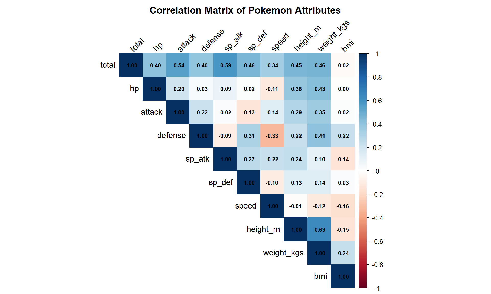
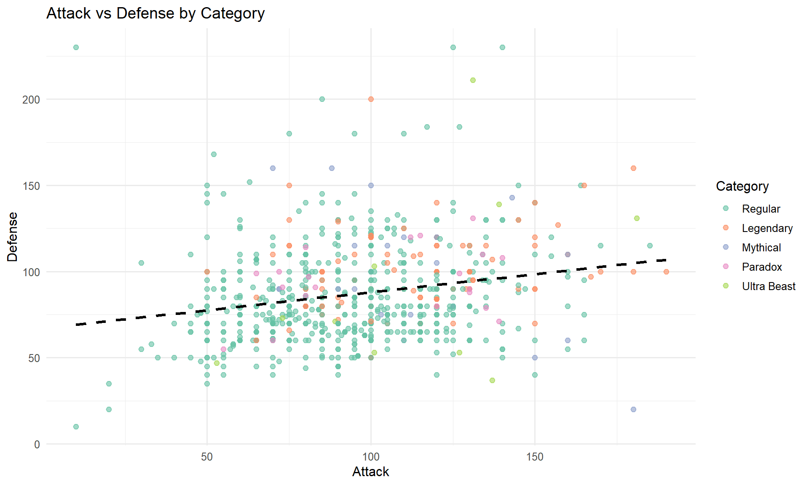
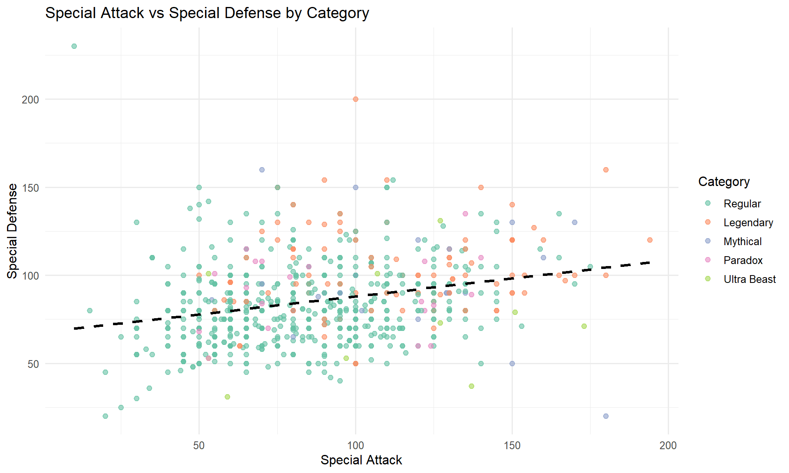
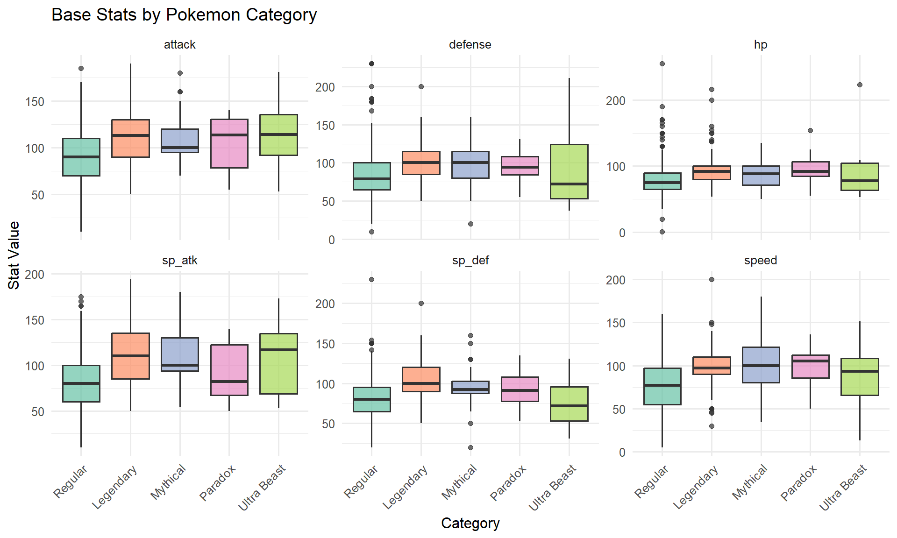
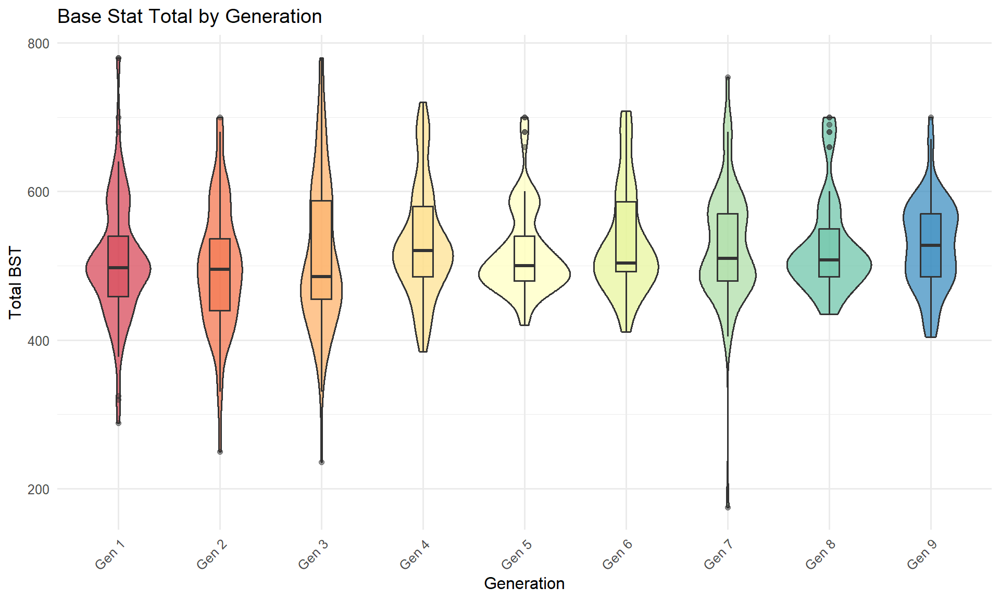
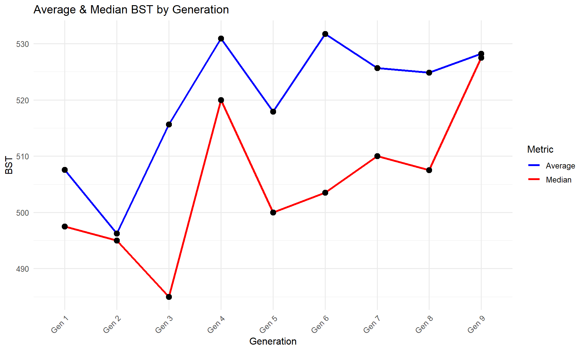
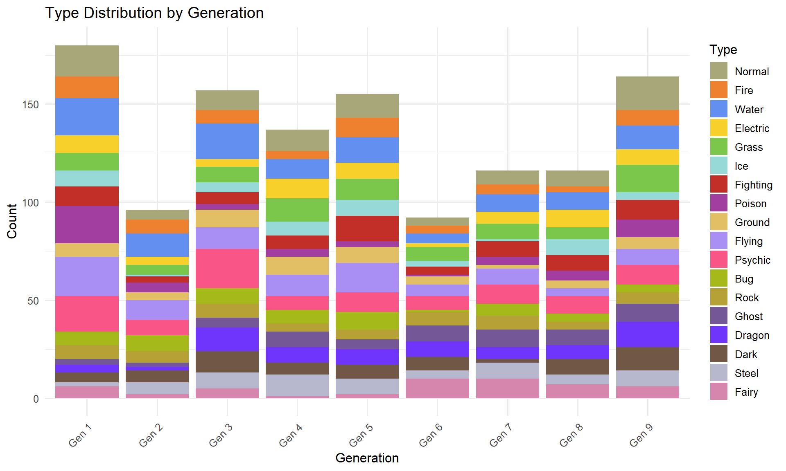

Pokemon EDA - Exploratory Data Analysis
2025-12-04
1. Load Libraries and Data
library(tidyverse)
library(ggplot2)
library(knitr)
# Set ggplot theme
theme_set(theme_minimal(base_size = 12))
# Check for optional packages
has_corrplot <- requireNamespace("corrplot", quietly = TRUE)
has_patchwork <- requireNamespace("patchwork", quietly = TRUE)
has_kableExtra <- requireNamespace("kableExtra", quietly = TRUE)
if (has_patchwork) library(patchwork)# Load enriched dataset - FINAL EVOLUTIONS ONLY with all features pre-computed
# Features include: category labels, generation, type one-hot encoding, is_dual_type
pokemon_df <- read_csv("data/pokemon_data_final_evolutions_enriched.csv")
# Restore factor levels (lost during CSV export)
pokemon_df$generation <- factor(pokemon_df$generation,
levels = paste0("Gen ", 1:9)
)
pokemon_df$category <- factor(pokemon_df$category,
levels = c("Regular", "Legendary", "Mythical", "Paradox", "Ultra Beast")
)
# Display structure
glimpse(pokemon_df)## Rows: 742
## Columns: 40
## $ dex <dbl> 3, 3, 6, 6, 6, 9, 9, 12, 15, 15, 18, 18, 20, 20, 22, 24…
## $ name <chr> "Venusaur", "VenusaurMega Venusaur", "Charizard", "Char…
## $ type_1 <chr> "Grass", "Grass", "Fire", "Fire", "Fire", "Water", "Wat…
## $ type_2 <chr> "Poison", "Poison", "Flying", "Flying", "Dragon", NA, N…
## $ total <dbl> 525, 625, 534, 634, 634, 530, 630, 395, 495, 395, 579, …
## $ hp <dbl> 80, 80, 78, 78, 78, 79, 79, 60, 65, 65, 83, 83, 55, 75,…
## $ attack <dbl> 82, 100, 84, 104, 130, 83, 103, 45, 150, 90, 80, 80, 81…
## $ defense <dbl> 83, 123, 78, 78, 111, 100, 120, 50, 40, 40, 80, 75, 60,…
## $ sp_atk <dbl> 100, 122, 109, 159, 130, 85, 135, 90, 15, 45, 135, 70, …
## $ sp_def <dbl> 100, 120, 85, 115, 85, 105, 115, 80, 80, 80, 80, 70, 70…
## $ speed <dbl> 80, 80, 100, 100, 100, 78, 78, 70, 145, 75, 121, 101, 9…
## $ height_m <dbl> 2.0, 2.4, 1.7, 1.7, 1.7, 1.6, 1.6, 1.1, 1.4, 1.0, 2.2, …
## $ weight_kgs <dbl> 100.0, 155.5, 90.5, 100.5, 110.5, 85.5, 101.1, 32.0, 40…
## $ bmi <dbl> 25.0, 27.0, 31.3, 34.8, 38.2, 33.4, 39.5, 26.4, 20.7, 2…
## $ is_legendary <lgl> FALSE, FALSE, FALSE, FALSE, FALSE, FALSE, FALSE, FALSE,…
## $ is_mythical <lgl> FALSE, FALSE, FALSE, FALSE, FALSE, FALSE, FALSE, FALSE,…
## $ is_paradox <lgl> FALSE, FALSE, FALSE, FALSE, FALSE, FALSE, FALSE, FALSE,…
## $ is_ultra_beast <lgl> FALSE, FALSE, FALSE, FALSE, FALSE, FALSE, FALSE, FALSE,…
## $ is_special <lgl> FALSE, FALSE, FALSE, FALSE, FALSE, FALSE, FALSE, FALSE,…
## $ category <fct> Regular, Regular, Regular, Regular, Regular, Regular, R…
## $ generation <fct> Gen 1, Gen 1, Gen 1, Gen 1, Gen 1, Gen 1, Gen 1, Gen 1,…
## $ has_bug <lgl> FALSE, FALSE, FALSE, FALSE, FALSE, NA, NA, TRUE, TRUE, …
## $ has_dark <lgl> FALSE, FALSE, FALSE, FALSE, FALSE, NA, NA, FALSE, FALSE…
## $ has_dragon <lgl> FALSE, FALSE, FALSE, FALSE, TRUE, NA, NA, FALSE, FALSE,…
## $ has_electric <lgl> FALSE, FALSE, FALSE, FALSE, FALSE, NA, NA, FALSE, FALSE…
## $ has_fairy <lgl> FALSE, FALSE, FALSE, FALSE, FALSE, NA, NA, FALSE, FALSE…
## $ has_fighting <lgl> FALSE, FALSE, FALSE, FALSE, FALSE, NA, NA, FALSE, FALSE…
## $ has_fire <lgl> FALSE, FALSE, TRUE, TRUE, TRUE, NA, NA, FALSE, FALSE, F…
## $ has_flying <lgl> FALSE, FALSE, TRUE, TRUE, FALSE, NA, NA, TRUE, FALSE, F…
## $ has_ghost <lgl> FALSE, FALSE, FALSE, FALSE, FALSE, NA, NA, FALSE, FALSE…
## $ has_grass <lgl> TRUE, TRUE, FALSE, FALSE, FALSE, NA, NA, FALSE, FALSE, …
## $ has_ground <lgl> FALSE, FALSE, FALSE, FALSE, FALSE, NA, NA, FALSE, FALSE…
## $ has_ice <lgl> FALSE, FALSE, FALSE, FALSE, FALSE, NA, NA, FALSE, FALSE…
## $ has_normal <lgl> FALSE, FALSE, FALSE, FALSE, FALSE, NA, NA, FALSE, FALSE…
## $ has_poison <lgl> TRUE, TRUE, FALSE, FALSE, FALSE, NA, NA, FALSE, TRUE, T…
## $ has_psychic <lgl> FALSE, FALSE, FALSE, FALSE, FALSE, NA, NA, FALSE, FALSE…
## $ has_rock <lgl> FALSE, FALSE, FALSE, FALSE, FALSE, NA, NA, FALSE, FALSE…
## $ has_steel <lgl> FALSE, FALSE, FALSE, FALSE, FALSE, NA, NA, FALSE, FALSE…
## $ has_water <lgl> FALSE, FALSE, FALSE, FALSE, FALSE, TRUE, TRUE, FALSE, F…
## $ is_dual_type <lgl> TRUE, TRUE, TRUE, TRUE, TRUE, FALSE, FALSE, TRUE, TRUE,…# Apply Factor Order
type_order <- c(
"Normal","Fire","Water","Electric","Grass","Ice",
"Fighting","Poison","Ground","Flying","Psychic","Bug",
"Rock","Ghost","Dragon","Dark","Steel","Fairy"
)
pokemon_df$type_1 <- factor(pokemon_df$type_1, levels = type_order)
pokemon_df$type_2 <- factor(pokemon_df$type_2, levels = type_order)2. Data Overview
2.1 Basic Statistics
# Numeric columns
num_cols <- c(
"total", "hp", "attack", "defense", "sp_atk", "sp_def", "speed",
"height_m", "weight_kgs", "bmi"
)
# Summary table
summary_stats <- pokemon_df |>
select(all_of(num_cols)) |>
summary()
print(summary_stats)## total hp attack defense
## Min. :175.0 Min. : 1.00 Min. : 10.00 Min. : 10.00
## 1st Qu.:475.2 1st Qu.: 68.00 1st Qu.: 75.00 1st Qu.: 68.00
## Median :505.0 Median : 80.00 Median : 95.00 Median : 80.00
## Mean :519.4 Mean : 82.49 Mean : 95.85 Mean : 87.16
## 3rd Qu.:570.0 3rd Qu.: 95.00 3rd Qu.:115.00 3rd Qu.:100.00
## Max. :780.0 Max. :255.00 Max. :190.00 Max. :230.00
## sp_atk sp_def speed height_m
## Min. : 10.00 Min. : 20.00 Min. : 5.00 Min. : 0.100
## 1st Qu.: 60.00 1st Qu.: 70.00 1st Qu.: 60.00 1st Qu.: 1.000
## Median : 85.00 Median : 82.00 Median : 84.00 Median : 1.400
## Mean : 87.19 Mean : 85.36 Mean : 81.37 Mean : 1.704
## 3rd Qu.:108.75 3rd Qu.:100.00 3rd Qu.:100.00 3rd Qu.: 1.900
## Max. :194.00 Max. :230.00 Max. :200.00 Max. :20.000
## weight_kgs bmi
## Min. : 0.1 Min. : 0.40
## 1st Qu.: 24.5 1st Qu.: 16.82
## Median : 52.1 Median : 26.50
## Mean :106.7 Mean : 37.24
## 3rd Qu.:112.2 3rd Qu.: 40.00
## Max. :999.9 Max. :644.002.2 Category Counts
# Count by category
category_summary <- pokemon_df |>
count(category) |>
mutate(percentage = round(100 * n / sum(n), 2)) |>
arrange(desc(n))
print(kable(category_summary, caption = "Pokemon by Category"))##
##
## Table: Pokemon by Category
##
## |category | n| percentage|
## |:-----------|---:|----------:|
## |Regular | 583| 78.57|
## |Legendary | 101| 13.61|
## |Mythical | 28| 3.77|
## |Paradox | 20| 2.70|
## |Ultra Beast | 10| 1.35|# Count by generation
gen_summary <- pokemon_df |>
count(generation) |>
mutate(percentage = round(100 * n / sum(n), 2))
print(kable(gen_summary, caption = "Pokemon by Generation"))##
##
## Table: Pokemon by Generation
##
## |generation | n| percentage|
## |:----------|---:|----------:|
## |Gen 1 | 112| 15.09|
## |Gen 2 | 60| 8.09|
## |Gen 3 | 102| 13.75|
## |Gen 4 | 84| 11.32|
## |Gen 5 | 99| 13.34|
## |Gen 6 | 52| 7.01|
## |Gen 7 | 67| 9.03|
## |Gen 8 | 72| 9.70|
## |Gen 9 | 94| 12.67|# Type distribution (primary type)
type_summary <- pokemon_df |>
count(type_1, sort = TRUE) |>
mutate(percentage = round(100 * n / sum(n), 2))
print(kable(head(type_summary, 10), caption = "Pokemon by Primary Type (Top 10)"))##
##
## Table: Pokemon by Primary Type (Top 10)
##
## |type_1 | n| percentage|
## |:--------|--:|----------:|
## |Water | 90| 12.13|
## |Normal | 78| 10.51|
## |Grass | 61| 8.22|
## |Psychic | 57| 7.68|
## |Electric | 52| 7.01|
## |Bug | 50| 6.74|
## |Fire | 44| 5.93|
## |Rock | 40| 5.39|
## |Dark | 37| 4.99|
## |Fighting | 35| 4.72|3. Univariate Analysis
3.1 Base Stat Total Distribution
# Overall distribution
p1 <- ggplot(pokemon_df, aes(x = total)) +
geom_histogram(bins = 40, fill = "steelblue", alpha = 0.7) +
geom_vline(aes(xintercept = mean(total, na.rm = TRUE)),
color = "red", linetype = "dashed", size = 1
) +
labs(
title = "Distribution of Base Stat Total (BST)",
subtitle = paste("Mean:", round(mean(pokemon_df$total, na.rm = TRUE), 1)),
x = "Total BST", y = "Count"
)
# By category
p2 <- ggplot(pokemon_df, aes(x = total, fill = category)) +
geom_density(alpha = 0.5) +
scale_fill_brewer(palette = "Set2") +
labs(
title = "BST Distribution by Category",
x = "Total BST", y = "Density", fill = "Category"
)
if (has_patchwork) {
p1 / p2
} else {
print(p1)
print(p2)
}
3.2 Individual Stat Distributions
stat_cols <- c("hp", "attack", "defense", "sp_atk", "sp_def", "speed")
pokemon_long <- pokemon_df |>
select(dex, name, category, all_of(stat_cols)) |>
pivot_longer(
cols = all_of(stat_cols),
names_to = "stat",
values_to = "value"
)
ggplot(pokemon_long, aes(x = value, fill = stat)) +
geom_histogram(bins = 30, alpha = 0.7) +
facet_wrap(~stat, scales = "free_y") +
scale_fill_brewer(palette = "Set3") +
labs(
title = "Distribution of Individual Base Stats",
x = "Stat Value", y = "Count"
) +
theme(legend.position = "none")
3.3 Physical Attributes
p1 <- ggplot(pokemon_df, aes(x = height_m)) +
geom_histogram(bins = 40, fill = "darkgreen", alpha = 0.7) +
scale_x_log10() +
labs(
title = "Height Distribution (log scale)",
x = "Height (m)", y = "Count"
)
p2 <- ggplot(pokemon_df, aes(x = weight_kgs)) +
geom_histogram(bins = 40, fill = "darkorange", alpha = 0.7) +
scale_x_log10() +
labs(
title = "Weight Distribution (log scale)",
x = "Weight (kg)", y = "Count"
)
p3 <- pokemon_df |>
filter(bmi < 1000) |> # Filter extreme outliers (Cosmoem BMI=99990)
# otherwise the plot will be severly compressed
ggplot(aes(x = bmi)) +
geom_histogram(bins = 40, fill = "purple", alpha = 0.7) +
labs(
title = "BMI Distribution (filtered < 1000)",
subtitle = "Note: Cosmoem (BMI=99,990) excluded as extreme outlier",
x = "BMI", y = "Count"
)
if (has_patchwork) {
(p1 | p2) / p3
} else {
print(p1)
print(p2)
print(p3)
}
4. Bivariate Analysis
4.1 Correlation Matrix
# Compute correlation
cor_matrix <- pokemon_df |>
select(all_of(num_cols)) |>
cor(use = "pairwise.complete.obs")
# Visualize
if (has_corrplot) {
corrplot::corrplot(cor_matrix,
method = "color",
type = "upper",
tl.col = "black",
tl.srt = 45,
addCoef.col = "black",
number.cex = 0.7,
title = "Correlation Matrix of Pokemon Attributes",
mar = c(0, 0, 2, 0)
)
} else {
# Alternative: heatmap
cor_df <- as.data.frame(cor_matrix) |>
rownames_to_column("var1") |>
pivot_longer(-var1, names_to = "var2", values_to = "correlation")
ggplot(cor_df, aes(x = var1, y = var2, fill = correlation)) +
geom_tile() +
scale_fill_gradient2(low = "blue", mid = "white", high = "red", midpoint = 0) +
labs(title = "Correlation Matrix of Pokemon Attributes") +
theme(axis.text.x = element_text(angle = 45, hjust = 1))
}
4.2 Attack vs Defense
ggplot(pokemon_df, aes(x = attack, y = defense, color = category)) +
geom_point(alpha = 0.6, size = 2) +
geom_smooth(method = "lm", se = FALSE, color = "black", linetype = "dashed") +
scale_color_brewer(palette = "Set2") +
labs(
title = "Attack vs Defense by Category",
x = "Attack", y = "Defense", color = "Category"
)
4.3 Special Attack vs Special Defense
ggplot(pokemon_df, aes(x = sp_atk, y = sp_def, color = category)) +
geom_point(alpha = 0.6, size = 2) +
geom_smooth(method = "lm", se = FALSE, color = "black", linetype = "dashed") +
scale_color_brewer(palette = "Set2") +
labs(
title = "Special Attack vs Special Defense by Category",
x = "Special Attack", y = "Special Defense", color = "Category"
)
4.4 Height vs Weight
ggplot(pokemon_df, aes(x = height_m, y = weight_kgs, color = type_1)) +
geom_point(alpha = 0.6, size = 2) +
scale_x_log10() +
scale_y_log10() +
geom_smooth(method = "lm", se = FALSE, color = "black") +
labs(
title = "Height vs Weight (log-log scale)",
x = "Height (m)", y = "Weight (kg)", color = "Primary Type"
) +
theme(legend.position = "right")
5. Group Comparisons
5.1 Stats by Category
# Box plots for each stat
pokemon_long |>
ggplot(aes(x = category, y = value, fill = category)) +
geom_boxplot(alpha = 0.7) +
facet_wrap(~stat, scales = "free_y") +
scale_fill_brewer(palette = "Set2") +
labs(
title = "Base Stats by Pokemon Category",
x = "Category", y = "Stat Value"
) +
theme(
axis.text.x = element_text(angle = 45, hjust = 1),
legend.position = "none"
)
5.2 BST by Generation
ggplot(pokemon_df, aes(x = generation, y = total, fill = generation)) +
geom_violin(alpha = 0.7) +
geom_boxplot(width = 0.2, alpha = 0.5) +
scale_fill_brewer(palette = "Spectral") +
labs(
title = "Base Stat Total by Generation",
x = "Generation", y = "Total BST"
) +
theme(
axis.text.x = element_text(angle = 45, hjust = 1),
legend.position = "none"
)
5.3 Stats by Primary Type (Top Types)
# Get top 10 types
top_types <- pokemon_df |>
count(type_1, sort = TRUE) |>
head(10) |>
pull(type_1)
pokemon_df |>
filter(type_1 %in% top_types) |>
ggplot(aes(x = reorder(type_1, total, median), y = total, fill = type_1)) +
geom_boxplot(alpha = 0.7) +
coord_flip() +
labs(
title = "BST by Primary Type (Top 10 Most Common)",
x = "Primary Type", y = "Total BST"
) +
theme(legend.position = "none")
6. Type Analysis
6.1 Type Distribution
# Official Type Color
type_colors <- c(
Normal = "#A8A77A",
Fire = "#EE8130",
Water = "#6390F0",
Electric = "#F7D02C",
Grass = "#7AC74C",
Ice = "#96D9D6",
Fighting = "#C22E28",
Poison = "#A33EA1",
Ground = "#E2BF65",
Flying = "#A98FF3",
Psychic = "#F95587",
Bug = "#A6B91A",
Rock = "#B6A136",
Ghost = "#735797",
Dragon = "#6F35FC",
Dark = "#705746",
Steel = "#B7B7CE",
Fairy = "#D685AD"
)
# Types(Normal+Fly will both count to Normal and Flying type)
p1 <- pokemon_df |>
pivot_longer(
cols = c(type_1, type_2),
names_to = "slot",
values_to = "type"
) |>
filter(!is.na(type)) |>
count(type, sort = TRUE) |>
head(10) |>
ggplot(aes(x = reorder(type, n), y = n, fill = type)) +
geom_col(alpha = 0.8) +
scale_fill_manual(values = type_colors) +
coord_flip() +
labs(title = "Top 10 Types", x = "Type", y = "Count") +
theme(legend.position = "none")
# Dual-type proportion
p2 <- pokemon_df |>
count(is_dual_type) |>
mutate(label = if_else(is_dual_type, "Dual-type", "Mono-type")) |>
ggplot(aes(x = "", y = n, fill = label)) +
geom_col(width = 1) +
coord_polar("y") +
labs(title = "Mono-type vs Dual-type", fill = "") +
theme_void()
if (has_patchwork) {
p1 | p2
} else {
print(p1)
print(p2)
}
6.2 Type Combinations
# Top type combinations
pokemon_df |>
filter(!is.na(type_2)) |>
count(type_1, type_2, sort = TRUE) |>
head(15) |>
mutate(combo = paste(type_1, "/", type_2)) |>
ggplot(aes(x = reorder(combo, n), y = n, fill = type_1)) +
geom_col(alpha = 0.8) +
scale_fill_manual(values = type_colors) +
coord_flip() +
labs(
title = "Top 15 Type Combinations",
x = "Type Combination", y = "Count", fill = "Primary Type"
)
6.3 Average Stats by Type
# Calculate average stats per type
type_stats <- pokemon_df |>
pivot_longer(
cols = c(type_1, type_2),
names_to = "slot",
values_to = "type"
) |>
filter(!is.na(type)) |>
group_by(type) |>
summarise(
count = n(),
avg_total = mean(total, na.rm = TRUE),
avg_hp = mean(hp, na.rm = TRUE),
avg_attack = mean(attack, na.rm = TRUE),
avg_sp_atk = mean(sp_atk, na.rm = TRUE),
avg_defense = mean(defense, na.rm = TRUE),
avg_sp_def = mean(sp_def, na.rm = TRUE),
avg_speed = mean(speed, na.rm = TRUE)
) |>
arrange(desc(avg_total))
print(kable(head(type_stats, 10), caption = "Top 10 Types by Average BST", digits = 1))##
##
## Table: Top 10 Types by Average BST
##
## |type | count| avg_total| avg_hp| avg_attack| avg_sp_atk| avg_defense| avg_sp_def| avg_speed|
## |:--------|-----:|---------:|------:|----------:|----------:|-----------:|----------:|---------:|
## |Dragon | 68| 600.3| 97.8| 108.2| 113.4| 95.1| 95.0| 90.9|
## |Psychic | 99| 550.4| 83.7| 88.9| 107.7| 85.1| 97.4| 87.6|
## |Steel | 60| 545.8| 79.2| 106.3| 81.3| 119.1| 90.0| 70.0|
## |Fire | 59| 539.7| 81.4| 98.3| 103.6| 85.2| 86.2| 85.1|
## |Fighting | 69| 536.3| 84.5| 119.9| 72.4| 88.5| 81.1| 89.9|
## |Fairy | 49| 527.4| 74.9| 85.3| 95.9| 88.9| 100.8| 81.5|
## |Ground | 53| 526.5| 93.2| 106.6| 75.4| 103.4| 80.8| 67.0|
## |Ice | 45| 526.4| 88.3| 99.3| 85.4| 90.4| 85.1| 77.8|
## |Dark | 64| 523.9| 84.4| 106.2| 85.2| 82.0| 81.2| 84.8|
## |Ghost | 57| 519.3| 76.4| 91.3| 96.4| 87.8| 89.9| 77.5|# Heatmap
type_stats |>
head(12) |>
select(type, avg_hp, avg_attack, avg_sp_atk, avg_defense, avg_sp_def, avg_speed) |>
pivot_longer(-type, names_to = "stat", values_to = "value") |>
mutate(stat = str_remove(stat, "avg_")) |>
ggplot(aes(x = stat, y = reorder(type, value), fill = value)) +
geom_tile() +
scale_fill_gradientn(
colours = c("#b9d6f2", "#d0e1f9", "#f7f9ff", "#f9d5e5", "#f6b0c3"),
name = "Average Value"
) +
labs(
title = "Average Stats Heatmap (Top 12 Types by BST)",
x = "Stat", y = "Primary Type", fill = "Average Value"
)
7. Special Categories Deep Dive
7.1 Legendary vs Regular Stats
# Statistical test
legendary_test <- t.test(total ~ is_legendary, data = pokemon_df)
cat("T-test: Legendary vs Regular BST\n")## T-test: Legendary vs Regular BSTcat("p-value:", legendary_test$p.value, "\n")## p-value: 2.768909e-34cat("Mean Regular:", legendary_test$estimate[1], "\n")## Mean Regular: 502.9563cat("Mean Legendary:", legendary_test$estimate[2], "\n\n")## Mean Legendary: 623.8911# Violin plot
pokemon_df |>
mutate(label = if_else(is_legendary, "Legendary", "Regular")) |>
ggplot(aes(x = label, y = total, fill = label)) +
geom_violin(alpha = 0.7) +
geom_boxplot(width = 0.2, alpha = 0.5) +
scale_fill_manual(values = c("Regular" = "steelblue", "Legendary" = "gold")) +
labs(
title = "BST: Legendary vs Regular Pokemon",
x = "", y = "Total BST"
) +
theme(legend.position = "none")
7.2 All Special Categories
category_stats <- pokemon_df |>
group_by(category) |>
summarise(
count = n(),
avg_total = mean(total, na.rm = TRUE),
avg_hp = mean(hp, na.rm = TRUE),
avg_attack = mean(attack, na.rm = TRUE),
avg_defense = mean(defense, na.rm = TRUE),
avg_sp_atk = mean(sp_atk, na.rm = TRUE),
avg_sp_def = mean(sp_def, na.rm = TRUE),
avg_speed = mean(speed, na.rm = TRUE)
) |>
arrange(desc(avg_total))
print(kable(category_stats, caption = "Average Stats by Category", digits = 1))##
##
## Table: Average Stats by Category
##
## |category | count| avg_total| avg_hp| avg_attack| avg_defense| avg_sp_atk| avg_sp_def| avg_speed|
## |:-----------|-----:|---------:|------:|----------:|-----------:|----------:|----------:|---------:|
## |Legendary | 101| 623.9| 98.3| 112.6| 99.4| 111.0| 103.4| 99.3|
## |Mythical | 28| 601.4| 83.9| 109.3| 98.5| 111.9| 96.2| 101.6|
## |Paradox | 20| 578.0| 95.9| 103.6| 94.5| 93.9| 90.7| 99.4|
## |Ultra Beast | 10| 567.0| 93.6| 113.2| 91.8| 108.4| 73.0| 87.0|
## |Regular | 583| 494.6| 79.0| 91.7| 84.2| 81.3| 81.8| 76.6|8. Generation Evolution Analysis
8.1 Power Creep Over Generations
gen_stats <- pokemon_df |>
group_by(generation) |>
summarise(
count = n(),
avg_total = mean(total, na.rm = TRUE),
median_total = median(total, na.rm = TRUE),
sd_total = sd(total, na.rm = TRUE)
)
ggplot(gen_stats, aes(x = generation)) +
geom_line(aes(y = avg_total, group = 1, color = "Average"), size = 1.2) +
geom_line(aes(y = median_total, group = 1, color = "Median"), size = 1.2) +
geom_point(aes(y = avg_total), size = 3) +
geom_point(aes(y = median_total), size = 3) +
scale_color_manual(values = c("Average" = "blue", "Median" = "red")) +
labs(
title = "Average & Median BST by Generation",
x = "Generation", y = "BST", color = "Metric"
) +
theme(axis.text.x = element_text(angle = 45, hjust = 1))
8.2 Type Diversity by Generation
pokemon_df |>
pivot_longer(
cols = c(type_1, type_2),
names_to = "slot",
values_to = "type"
) |>
filter(!is.na(type)) |>
mutate(type = factor(type, levels = type_order)) |>
group_by(generation, type) |>
summarise(count = n(), .groups = "drop") |>
ggplot(aes(x = generation, y = count, fill = type)) +
geom_col(position = "stack") +
scale_fill_manual(values = type_colors) +
labs(
title = "Type Distribution by Generation",
x = "Generation", y = "Count", fill = "Type"
) +
theme(axis.text.x = element_text(angle = 45, hjust = 1))
9. Key Findings Summary
library(glue)
cat(glue("=== EDA KEY FINDINGS ===
1. Dataset Overview:
- Total Pokemon: {nrow(pokemon_df)}
- Legendary: {sum(pokemon_df$is_legendary)}
- Mythical: {sum(pokemon_df$is_mythical)}
- Regular: {sum(!pokemon_df$is_special)}
2. Base Stats:
- Mean BST: {round(mean(pokemon_df$total, na.rm = TRUE), 1)}
- BST Range: {min(pokemon_df$total, na.rm = TRUE)} - {max(pokemon_df$total, na.rm = TRUE)}
3. Type Distribution:
- Unique primary types: {length(unique(pokemon_df$type_1))}
- Dual-type Pokemon: {sum(pokemon_df$is_dual_type)} ({round(100 * mean(pokemon_df$is_dual_type), 1)}%)
4. Statistical Tests:
- Legendary vs Regular BST p-value: {format(legendary_test$p.value, scientific = TRUE, digits = 3)}
- Difference is {if_else(legendary_test$p.value < 0.001, 'highly', '')} significant
5. Correlations:
- Total vs Attack: {round(cor(pokemon_df$total, pokemon_df$attack, use = 'complete.obs'), 3)}
- Attack vs Defense: {round(cor(pokemon_df$attack, pokemon_df$defense, use = 'complete.obs'), 3)}
- Height vs Weight: {round(cor(pokemon_df$height_m, pokemon_df$weight_kgs, use = 'complete.obs'), 3)}
6. Physical Attributes:
- BMI Range (excluding outliers): {round(min(pokemon_df$bmi[pokemon_df$bmi < 1000], na.rm = TRUE), 1)} - {round(max(pokemon_df$bmi[pokemon_df$bmi < 1000], na.rm = TRUE), 1)}
- Extreme outlier: Cosmoem (BMI = 99,990) due to ultra-dense core
- Height range: {min(pokemon_df$height_m, na.rm = TRUE)} - {max(pokemon_df$height_m, na.rm = TRUE)} m
- Weight range: {min(pokemon_df$weight_kgs, na.rm = TRUE)} - {max(pokemon_df$weight_kgs, na.rm = TRUE)} kg
"))## === EDA KEY FINDINGS ===
##
## 1. Dataset Overview:
## - Total Pokemon: 742
## - Legendary: 101
## - Mythical: 28
## - Regular: 583
##
## 2. Base Stats:
## - Mean BST: 519.4
## - BST Range: 175 - 780
##
## 3. Type Distribution:
## - Unique primary types: 18
## - Dual-type Pokemon: 471 (63.5%)
##
## 4. Statistical Tests:
## - Legendary vs Regular BST p-value: 2.77e-34
## - Difference is highly significant
##
## 5. Correlations:
## - Total vs Attack: 0.545
## - Attack vs Defense: 0.216
## - Height vs Weight: 0.631
##
## 6. Physical Attributes:
## - BMI Range (excluding outliers): 0.4 - 644
## - Extreme outlier: Cosmoem (BMI = 99,990) due to ultra-dense core
## - Height range: 0.1 - 20 m
## - Weight range: 0.1 - 999.9 kg